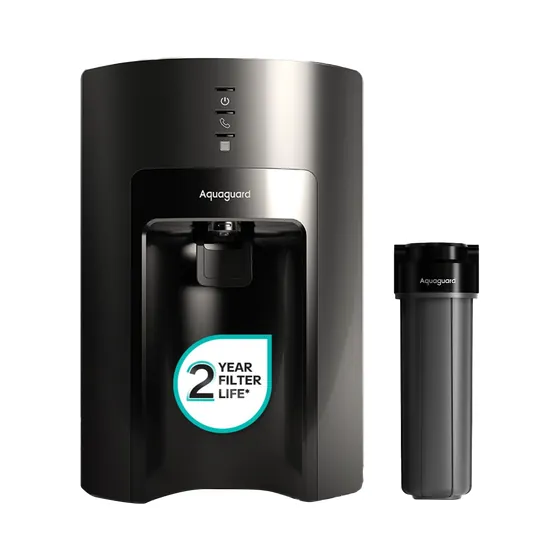
5 LAquaguard Sure Delight 2X Aquasaver RO+UV+UF+MC Stainless Steel Water PurifierView details →
Home/Water purifiers
RO, UV and alkaline purifiers from Aquaguard, Livpure and Purosis — chosen after we test your actual water, not from a brochure.
Delivered and installed across Pandavapura, Mandya and Mysuru

Brands we stock
Tap a brand to see just their models. Every one of these we can supply, install and service.

5 L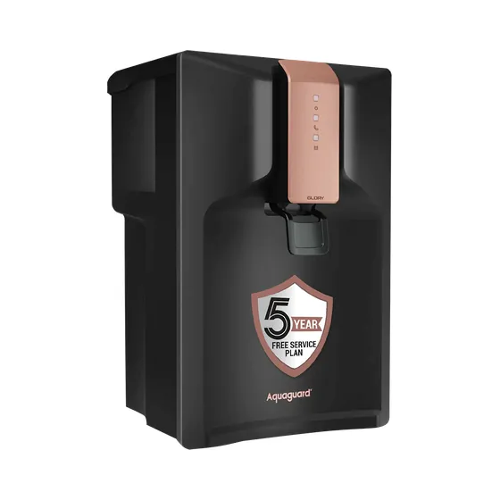
6.2 L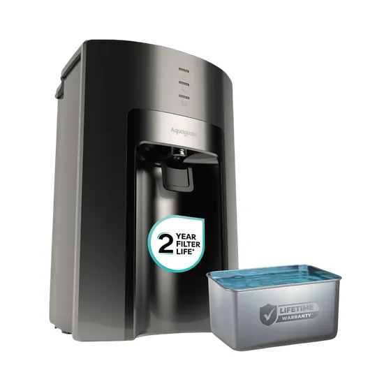
6.2 L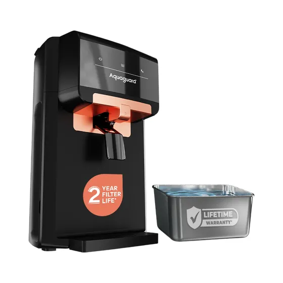
6 L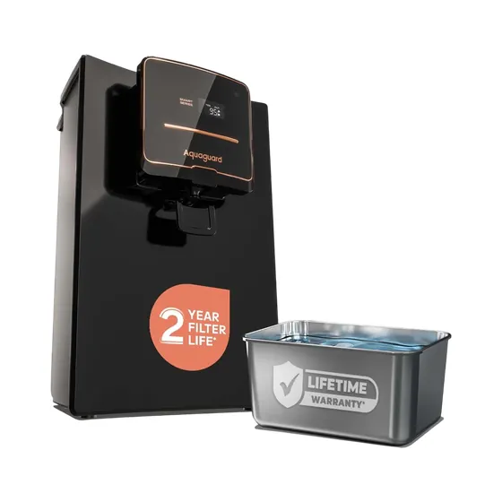
UV + UF; 9-stage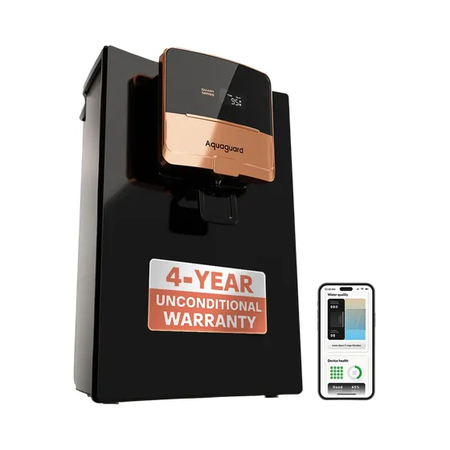
6.2 L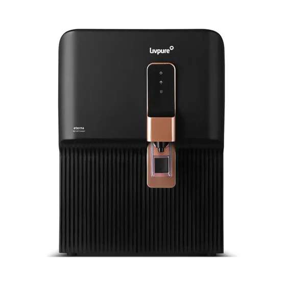
7 L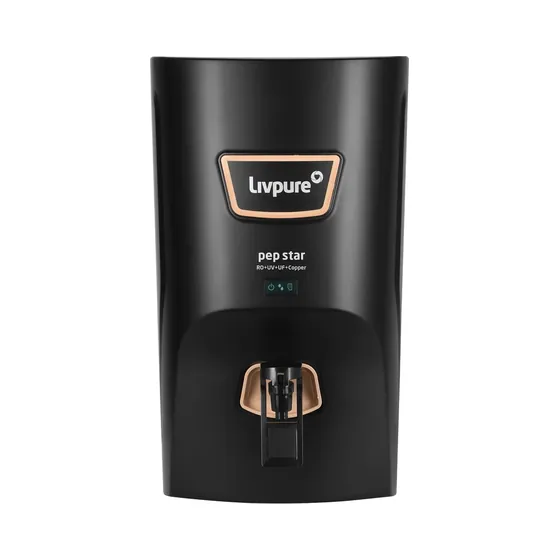
7 L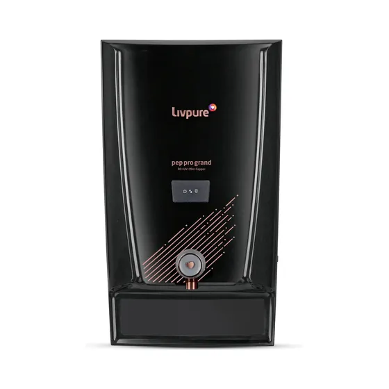
7 L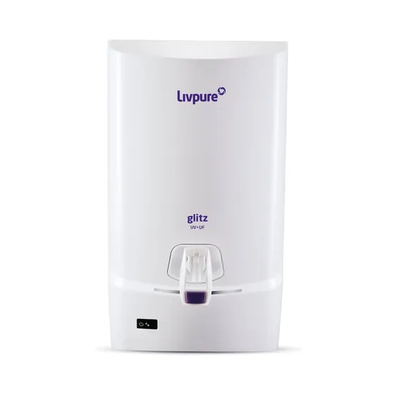
7 L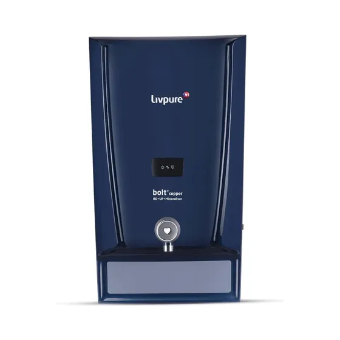
7 L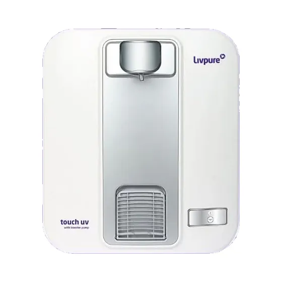
UV; 3-stage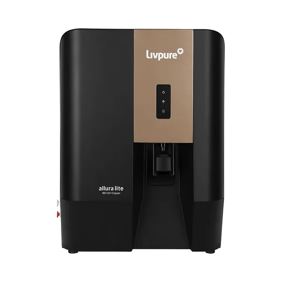
7 L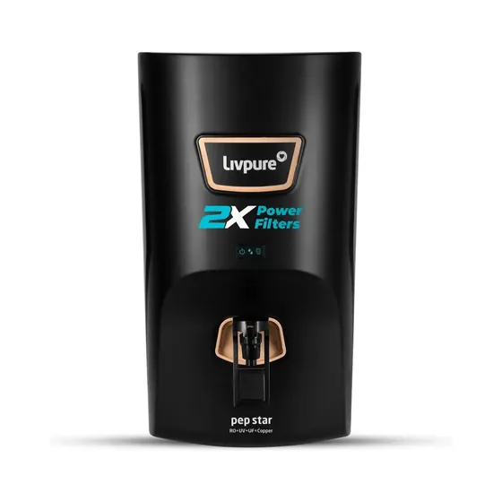
7 L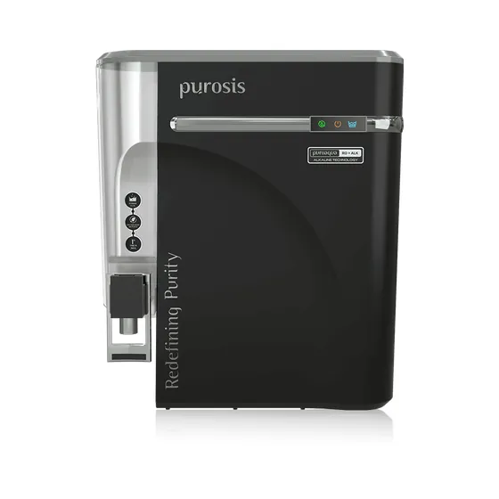
9 L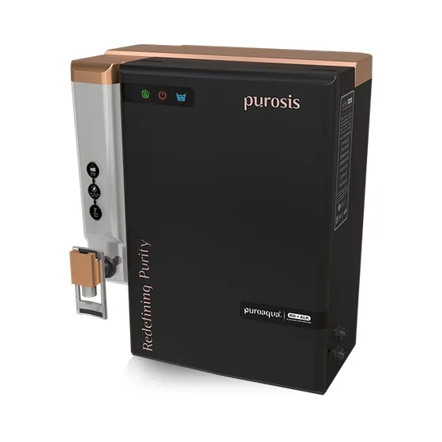
14 L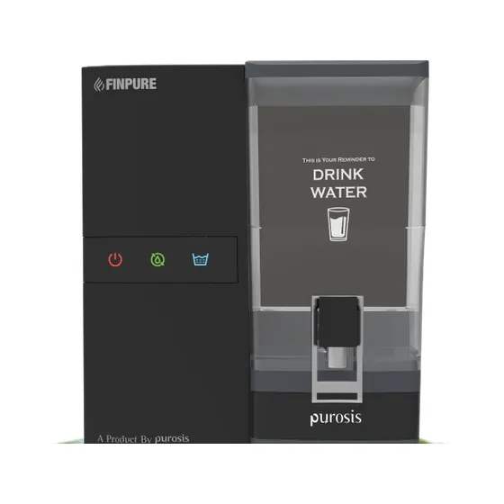
9–12 LStock changes week to week — call us to check what is on the shelf today. Product photographs are added as the brands supply them.
RO is the only stage that removes dissolved salt. UV kills germs but leaves the salt exactly where it was.
Borewell water here is salty, so an RO stage isn't optional — a UV-only unit leaves you with safe water that still tastes of the ground.
If your borewell water carries sand, that grit reaches the RO membrane and kills it early. A small external pre-filter costs very little and roughly doubles membrane life. We fit one on almost every borewell job.
Work it out yourself
The same rules we use in the shop, as two or three plain questions. It ends with a WhatsApp message already filled in with your numbers.
This alone decides which purifier suits your house.
You need
Get a price for this →An RO stage is necessary, because a UV-only purifier does not reduce TDS. We test your water at your home first, and where it carries sand or silt an external sediment pre-filter is fitted so the RO membrane lasts much longer.
Sediment and carbon filters typically need changing every six to twelve months, and the RO membrane every two to three years, though hard or silty water shortens both. We keep a record of your installation date and remind you when it is due.
RO does remove beneficial minerals along with the salts, which is why alkaline or mineral-restoring stages exist. For most households the difference is a matter of taste rather than health, and we fit an alkaline stage where the water tastes flat after RO.
Boiling kills bacteria but concentrates dissolved salts rather than removing them, so it does not help with high TDS borewell water. If your water tastes salty or leaves white deposits, boiling will not fix it.
Yes, for the brands we stock. Bring the model number or send a photo of the unit on WhatsApp and we will tell you whether we carry the filters for it.
That's all we need to quote properly.
During shop hours you'll usually have a price back within the hour. No charge for the site visit, and no obligation to buy.